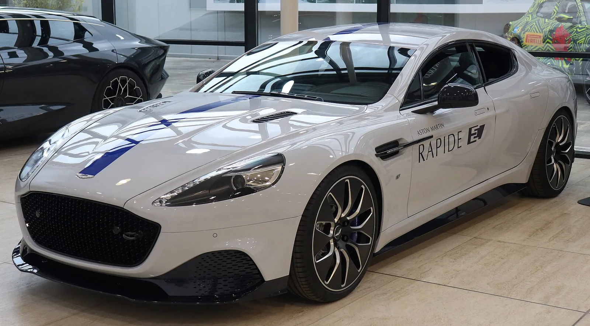
▲ 2019년 공개된 애스턴마틴 라피드 E 시제차. 애스턴마틴의 첫 양산 EV 일정은 이후 계속 뒤로 밀렸다 ⓒ Vauxford (Wikimedia Commons, CC BY-SA 4.0)
"법규 이유로 [일부 시장에서] 2035 직전에야 BEV가 필요하다." 애스턴마틴 아드리안 홀마크 CEO가 영국 오토카와의 인터뷰에서 한 말로(원문: "We only need BEVs to be compliant for legislative reasons [in certain markets] just before 2035", 대괄호는 인용 매체의 보충 표기), 10월 2일 전후 해외 매체들이 일제히 옮겼다. 첫 순수전기차(BEV)는 2033~2035년 사이에 나오고, V8과 V12는 같은 시기까지 법규에 맞춰 살려 두겠다는 내용이다. 이 기사는 두 개의 '2035'가 섞이지 않도록 원문 표현을 하나씩 분리하고, 지금까지 네 번 바뀐 EV 출시 목표를 표로 정리한다.
이 글은 'EV 전략 변경' 한 가지에 집중한다. 지금 팔리는 차와 신차 소식은 DBX GT 세계 최초 공개 기사, 838마력 V12 발렌 기사, S 3종 국내 공개 기사에서 다뤘다.
1. 전제 확인 — 2033~2035는 '무엇의' 시기인가
헤드라인만 보면 "2035년까지 V8·V12 유지"와 "첫 EV 2033~2035"가 한 문장처럼 읽혀서, 2035가 내연기관 종료 연도로 오해되기 쉽다. 오토카 인터뷰를 인용한 여러 매체(오토카 인디아, 폴탄, EVs&Beyond, 슈퍼카 블로그)를 대조하면 구분은 이렇다.
| 구분 | 원문 표현(매체 인용 번역) | 의미 |
|---|---|---|
| 첫 BEV 출시 | "2035일 수도, 2033일 수도 있다. 그 3년 창구 안이다. 2031은 아니다" | 출시 시기의 범위. 구체적 연도는 홀마크도 "부정확해서" 확정하지 않음 |
| BEV가 필요한 이유 | "법규 이유로 [일부 시장에서] 2035 직전에야 BEV가 필요하다"(대괄호는 인용 매체의 보충 표기) | 규제 준수용 모델이라는 설명. 판매 목표나 수요 때문이 아님 |
| V8·V12 | "그 기간 끝까지 큰 엔진과 작은 엔진(V12·V8)을 살려 두고 규제에 적합하게 유지할 로드맵이 있다"(V12·V8 병기는 폴탄 보충) | 내연기관 유지 기한(법규상 허용되는 범위 내). 단종 시점 발표가 아님 |
| 전체 라인업 | 2030~2035년 사이 전 모델을 새 세대로 교체 | 신차 교체 주기. 내연기관을 "규제가 허용하는 곳에서는 유지"한다는 단서가 붙음 |
정리하면 2033~2035는 "첫 EV가 나올 시기"이고, 2035년은 "V8·V12를 규제에 맞춰 이어 가겠다는 로드맵의 끝"이다. 두 숫자가 우연히 겹친 것이 아니라, 홀마크는 법이 BEV를 요구하는 시점 직전까지는 내연기관 중심으로 간다는 취지로 설명한 것이다. 오토카 인디아는 이를 "2035년까지 'predominantly ICE-based(주로 내연기관 기반)'"로 전했다.
✅ 먼저 밝힙니다
이번 변경은 애스턴마틴 공식 보도자료가 아니라 CEO 인터뷰에 근거한다. 카프리즘은 오토카 UK 원문(HTTP 402 접근 불가)을 직접 열람하지 못했다. 대신 오토카 인디아와 폴탄 본문에서 직접 인용구를 확인했고, 복수 매체의 인용구가 일치하는 부분만 사실로 적는다. 모터원은 서버 오류(502), 카앤드라이버는 접근이 차단돼 본문을 직접 확인하지 못했다.
▲ 2019년 공개된 전기 4도어 라피드 E 시제차. 애스턴마틴이 선보인 전기 시제차이며 양산 첫 EV와는 별개다(촬영 장소는 확정하지 않음) ⓒ Vauxford (Wikimedia Commons, CC BY-SA 4.0)
2. 이전 계획 vs 현재 계획 — 네 번 미룬 타임라인
첫 EV 일정은 이번이 처음 바뀐 것이 아니다. 2023년 루시드 공급 계약 때 '2025년'이던 목표는 계속 뒤로 밀렸다. 다만 매체마다 단계 수가 다르게 세는데, 2024년 4월의 '2027'은 출시가 아니라 인도 시점으로 읽는 보도(로이터 계열)와 새 목표 연도로 읽는 보도(카스쿱스)가 갈린다. 아래 표는 이를 구분해 적었다.
| 시점 | 당시 목표 | 근거·맥락 | 확인 수준 |
|---|---|---|---|
| 2023년 6월 | 2025년 | 루시드와 전동 파워트레인 공급 계약 발표. 스트롤 회장 "게임 체인저" | 다수 매체 일치(electrive 등) |
| 2024년 2월 | 2026년 | 연간 실적 발표에서 1년 연기. | 모터원·LSE 보도 검색 요약으로 확인, 원문 미열람 |
| 2024년 4월 | 2026 출시·2027 인도(또는 2027) | 영국이 내연기관 판매 금지를 2030→2035로 미룬 직후. 스트롤 "허용되는 한 내연기관을 만들 것" | 매체별 해석 상이(위 설명 참조) |
| 2024년 말~2025년 초 | 2029년 말~2030년 ("이번 10년 안") | 홀마크 취임 직후 유럽 매체 라운드테이블. 신규 PHEV 2030, V12는 한정판으로 최소 2032까지 | 월즈오토·카스쿱스·고오토(2025.2) 일치, 연도 표기는 "2029 말"과 "2030"으로 갈림 |
| 2026년 10월 2일 전후 | 2033~2035년 사이 (2031 아님) | 오토카 인터뷰. 법규상 2035 직전에야 BEV 필요 | 복수 매체의 직접 인용 일치 |
계산해 보면 2025년 목표 대비 지연은 최소 8년(2033), 최대 10년(2035)이다. 홀마크 취임 직후 '2030년'과 비교해도 3~5년 더 늦어졌다. 같은 CEO가 취임 직후 제시한 목표를 다시 미룬 셈이다. 오토카 프로 계열 보도는 "고정 출시일이 없다"고 전했지만, 이는 홀마크의 직접 인용구가 아니라 보도 표현이라는 점은 구분해야 한다.
📍 "BEV 부정론자가 아니라 지연론자"
홀마크는 애스턴마틴을 "BEV deniers(부정론자)가 아니라 BEV delayers(지연론자)"라고 불렀다고 여러 매체가 인용했다. 전기차를 포기한 것이 아니라 시기를 규제와 기술 성숙에 맞추겠다는 뜻이며, 포기 선언은 아니다.
3. 왜 미뤘나 — CEO가 밝힌 사유와 매체의 해석
사유는 크게 '수요·법규', '기술 성숙', '계약 구조' 세 층으로 나뉜다. 어디까지가 홀마크의 직접 발언이고 어디부터가 매체의 해석인지 구분하면 이렇다.
| 사유 | 내용 | 성격 |
|---|---|---|
| 수요·법규 변화 속도 | EV 수요와 법규가 "어떤 자동차 회사도 감당할 수 있는 것보다 훨씬 빠르게 변하고 있다"(원문 일부: "changing way faster than any car company can cope with") | CEO 발언의 일부 직접 인용(오토카 인디아·폴탄에서 확인, 주어는 매체 요약) |
| 규제 준수 시점 | "법규 이유로 [일부 시장에서] 2035 직전에야 BEV가 필요하다" | CEO 직접 인용(오토카 인디아·폴탄 본문에서 원문 확인) |
| 기술 성숙 | 연기하면 배터리·전동 파워트레인 기술을 더 평가할 시간이 생김 | CEO 취지 발언을 매체가 요약 |
| 루시드 계약 | "활성화할 때쯤이면 얻는 기술이 처음 계약 때와 완전히 다를 것" | CEO 직접 인용(오토카 인디아). 오히려 연기의 이점으로 설명 |
| 고가 시장 EV 수요 | 2024년 스트롤 회장이 애스턴마틴 가격대에서는 EV 수요가 기대보다 낮다고 언급 | 과거 발언(EVs&Beyond 인용), 이번 인터뷰 발언 아님 |
| 수익성·재무 | 이번 인터뷰에서 직접 언급은 확인하지 못함 | 카프리즘 추정(아래 재무 표 참조) |
눈여겨볼 대목은 '수요 부진'이 아니라 '법규가 요구하는 만큼만'이라는 논리다. 홀마크는 EV를 상품 전략이 아니라 규제 준수 수단으로 규정했다. 수익성이나 수요 부진을 연기 사유로 직접 든 것은 이번 인터뷰 인용구에서 확인되지 않았다.
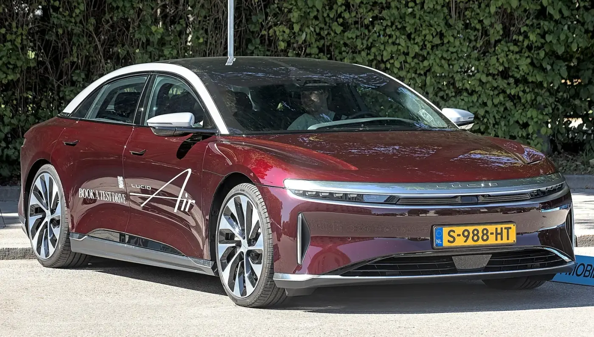
▲ 애스턴마틴에 전동 파워트레인을 공급하기로 한 루시드의 에어(촬영지·시점은 확정하지 않음). 홀마크는 연기하면 루시드에서 받을 기술이 처음 계약 때와 달라질 것이라고 했다 ⓒ Alexander-93 (Wikimedia Commons, CC BY-SA 4.0)
4. V8·V12·하이브리드 — 로드맵에서 확인된 것
EV를 늦추는 대신 내연기관과 하이브리드로 시간을 번다는 구조다. 이번 인터뷰 보도에서 확인되는 내용은 다음과 같다.
| 항목 | 2024년 말~2025년 초 보도 | 2026년 10월 발언 | 차이 |
|---|---|---|---|
| 첫 BEV | 이번 10년 안(2029 말~2030) | 2033~2035 | 3~5년 추가 지연 |
| V12 | 한정판으로 최소 2032년까지 | "그 기간 끝까지" 유지·규제 적합 로드맵(2035) | 유지 시한이 최소 3년 늘어남(단, 한정판 전제 여부는 이번 인용에서 확인 못 함) |
| V8 | 언급 적음 | "큰 엔진과 작은 엔진"(V12·V8, 폴탄 보충) 모두 유지 | 명시적 유지 약속 |
| PHEV | 2030년 신규 PHEV, 하이브리드 확대에 집중 | "아마 플러그인은 아니다. 200kg 페널티가 필요 없다" | 플러그인 비중 축소 시사 |
| 전 라인업 | 5개 핵심 모델 집중·한정판 확대 | 2030~2035년 전 모델을 새 세대로 교체 | 교체 주기 구체화 |
V12와 PHEV의 변화가 흥미롭다. 2024년 말 홀마크는 V12를 2032년 정도까지 한정판으로만 살리겠다는 취지로 알려졌는데, 이번에는 V8과 V12를 규제 준수 범위 내에서 2035년까지 이어 가는 로드맵이 있다고 했다. 다만 두 발언의 전제가 같은지(한정판 한정인지, 양산 전반인지)는 확인하지 못했다. 또 플러그인 하이브리드를 줄이는 방향은 이미 발매 중인 PHEV 발할라와 어떻게 연결되는지 명확하지 않다. 애스턴마틴 공식 실적 자료는 발할라를 "첫 미드십 PHEV"로 소개한다.
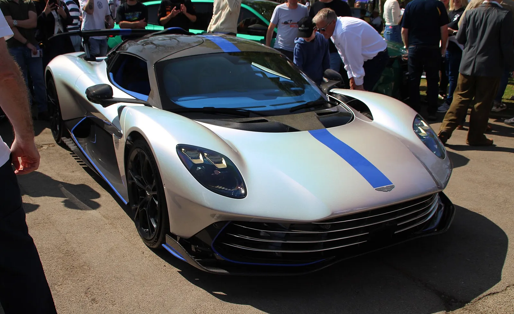
▲ 플러그인 하이브리드 미드십 슈퍼카 발할라(파일 정보 기준 2025년 촬영). 공식 H1 실적 자료는 2026년 상반기 220대 이상, 연간 약 500대 인도를 예상했다 ⓒ Calreyn88 (Wikimedia Commons, CC BY-SA 4.0)
홀마크의 '200kg 페널티' 발언은 플러그인 하이브리드의 배터리·충전 장비 무게를 뜻하는 것으로 읽히지만, 이 수치의 산출 근거는 인터뷰 보도에서 확인되지 않았다. 마일드·풀 하이브리드(비플러그인)로 법규를 맞추겠다는 취지로 이해된다.
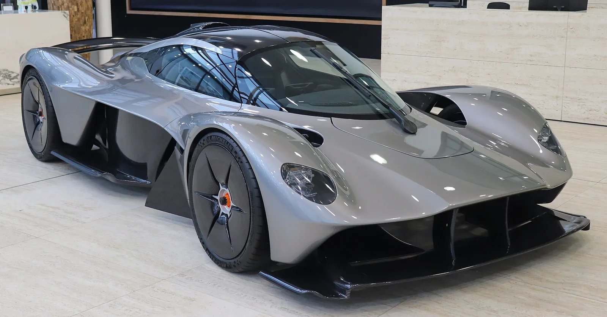
▲ V12 하이퍼카 발키리(파일명 기준 AMR Pro, 전시장 촬영). V12 한정 모델의 상징이다. 레이스 소식은 발키리 실버스톤 기사에서 다뤘다 ⓒ Vauxford (Wikimedia Commons, CC BY-SA 4.0)
하이브리드와 협력사 — 공식 실적 자료가 말하는 것
이번 인터뷰에서 홀마크는 하이브리드 전동화가 계획의 일부이지만 "아마 플러그인은 아니다"라고 했다. 같은 시기 H1 2026 실적 자료(RNS)는 방향을 이렇게 적는다. 아래는 원문 표현을 옮긴 것이다.
| 항목 | 확인된 표현 | 출처 | 해석 시 유의 |
|---|---|---|---|
| 파워트레인 방향 | "blended drivetrain approach(혼합 파워트레인 접근)", "electrified sports cars and SUVs" 라인업 계획 | H1 2026 RNS | 'electrified'는 플러그인 여부를 특정하지 않는다 |
| 협력 3사 | 루시드·지리·메르세데스-벤츠와의 전략 협약이 "기술 접근"을 제공 | H1 2026 RNS | 협약 조건·로드맵 세부는 자료에 없음 |
| 메르세데스·루시드 | 메르세데스는 엔진, 루시드는 EV 기술 파트너로 소개 | 오토카 인디아 | 지리의 구체 역할은 확인 못 함 |
| EV 투자 수준 | "지금은 아주 낮은 수준의 투자이고 연구와 검토 단계이며, 한 자릿수 백만 파운드도 안 된다" | 폴탄(오토카 인용) | 원문 영어는 "not even single-digit millions of investment" |
| 발할라(PHEV) | "첫 미드십 PHEV", H1 2026 인도 220대 이상, 2026년 연간 약 500대 | H1 2026 RNS | 홀마크의 "플러그인은 아니다"와 상충하는지, 발할라가 예외인지는 자료에서 확인 못 함 |
카프리즘 해석을 덧붙이면, 발할라는 이미 팔리는 한정 생산 PHEV이고 홀마크의 발언은 앞으로 양산 라인업에 대한 방향이라 두 내용이 반드시 충돌하는 것은 아니다. 다만 이는 추정이며, 발할라 이후 PHEV 계획에 대한 직접 발언은 확인하지 못했다.
5. 숫자로 보는 배경 — 2026년 상반기 공식 실적
수익성이 연기 사유라고 CEO가 말한 근거는 없지만, 같은 시기 공식 자료는 재무 부담을 보여 준다. 애스턴마틴은 2026년 상반기(6월 30일 종료) 실적을 발표하면서 신제품 개발 투자를 줄이겠다고 밝혔다.
| 항목 | H1 2026 | H1 2025 | 변화(계산) |
|---|---|---|---|
| 매출 | 6억 2860만 파운드 | 4억 5440만 파운드 | +38% |
| 매출총이익 | 2억 1250만 파운드 | 1억 2660만 파운드 | +68% |
| 조정 EBIT | -1억 890만 파운드 | -1억 2150만 파운드 | 적자 폭 1260만 파운드 축소 |
| 순부채 | 15억 4470만 파운드 | 13억 7770만 파운드 | +1억 6700만 파운드(+12.1%). RNS 본문은 2025년 12월 말 13억 8030만 파운드 대비로 서술해 그 기준으로는 +1억 6440만 파운드(+11.9%) |
| 자본투자(상반기) | 1억 2020만 파운드 | 1억 7060만 파운드 | -29.5%(정밀값 기준, 반올림값 120/171로는 -29.8%) |
| 신제품 개발·기술 접근 비용 자본투자(RNS 표기: capital investment in new product developments and technology access fees, 연간 가이던스) | 약 3억 파운드 | 2025년 3억 4100만 파운드 | -12.0% |
| 2026~2030 자본투자 계획 | 약 17억 파운드 | 이전 약 20억 파운드 | -3억 파운드(-15%) |
순부채 증가율은 H1 2025 대비 (1,544.7-1,377.7)÷1,377.7=12.1%, RNS 본문이 쓰는 2025년 12월 말(1,380.3) 대비로는 (1,544.7-1,380.3)÷1,380.3=11.9%, 상반기 자본투자 감소율은 정밀값 (170.6-120.2)÷170.6=29.5%(반올림값 120·171로 계산하면 29.8%), 연간 신제품 투자 감소율은 (341-300)÷341=12.0%로 계산했다. 공식 자료 문구는 "자본투자 계획을 약 17억 파운드로 축소(이전 약 20억 파운드)"다. 실적 자료는 하이브리드 중심 "혼합 파워트레인 접근"으로 내연기관의 대안을 개발하고 있다고 설명하며, 루시드·지리·메르세데스 벤츠와의 기술 협력을 언급한다. 이번 EV 연기가 이 투자 축소 때문이라고 연결하는 것은 카프리즘의 추정이며, 애스턴마틴이 공식적으로 그렇게 설명한 것은 확인하지 못했다. 이 표의 수치는 공식 RNS 원문과 대조해 확인했다. 2026년 상반기 실적 원문 바로가기
현금흐름·유동성·배당 — EV보다 먼저 보이는 숙제
| 항목 | H1 2026 | 비교 기준 | 계산·비고 |
|---|---|---|---|
| 잉여현금흐름 | -1억 9760만 파운드(유출) | H1 2025 -3억 2100만 파운드 | 유출 1억 2340만 파운드 감소(-38.4%). (321.0-197.6)÷321.0 |
| 2025년 연간 잉여현금흐름 | - | -4억 1000만 파운드(유출) | 2026년 가이던스는 "상당한 개선"(수치 제시 없음) |
| 유동성(6월 30일) | 현금 1억 1490만 + 사용 가능 한도 3030만 | 합계 1억 4520만 파운드 | 114.9+30.3=145.2 |
| 조정 순레버리지 | 8.9배 | - | 순부채 대비 후행 12개월(LTM) 조정 EBITDA 배수(RNS 정의) |
| 신규 채무조달 | 2026년 7월 5억 5000만 파운드 완료 | 프로포마 유동성 약 3억 4000만 파운드 | 조달 조건은 확인 못 함 |
| 매출총이익률 | 33.8% | H1 2025 27.9% | 212.5÷628.6, 126.6÷454.4. 연간 가이던스는 "30%대 후반" |
| 배당 | 확인되지 않음 | - | RNS에서 배당 선언 문구를 찾지 못함(적자·고레버리지 상태와 부합하나 단정하지 않음) |
해석은 이렇다. 현금 유출은 줄었지만 순레버리지가 8.9배이고 유동성이 1억 4520만 파운드에 불과해, 7월의 5억 5000만 파운드 조달 전까지는 여유가 크지 않았다. 이런 상태에서 수억 파운드가 드는 신규 EV 플랫폼 개발을 앞당기기는 어렵다는 것이 합리적 추론이지만, 홀마크가 재무를 사유로 직접 말한 근거는 없으므로 추정이다. 2026년 도매 판매량은 2025년(5,448대)과 비슷한 수준으로 가이던스가 제시됐다.
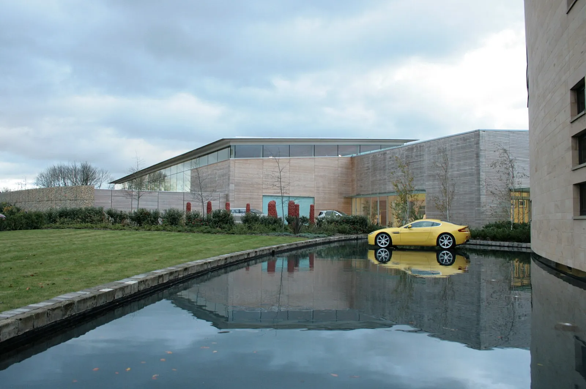
▲ 애스턴마틴 본사 사진으로 등록된 파일(2009년 촬영). 파일 설명에 의존한 캡션이며 현재 건물 모습과 다를 수 있다 ⓒ david falkner (Wikimedia Commons, CC BY 2.0)
6. 앞으로 10년은 '내연기관 + 하이브리드' — 이미 발행한 기사와 연결
EV가 늦어지면 2035년까지의 주력은 V8·V12 라인업이다. 최근 공개·발표된 차가 이 방향과 맞닿아 있다. 아래는 카프리즘이 이미 다룬 신차를 이번 전략 변경과 연결해 정리한 것이다.
| 차종 | 파워트레인(기사 기준) | 연결되는 대목 | 관련 기사 |
|---|---|---|---|
| DBX GT | 4.0L V8 트윈터보 727PS | SUV에서도 V8 유지 | DBX GT 공개 |
| 발렌 | 5.2L V12 트윈터보 838마력, 150대 한정 | V12 한정판 노선 | 발렌 |
| DBX S·밴티지 S·DB12 S | V8 계열 고성능화 | 국내에도 8월 공개 | S 3종 국내 공개 |
| DB12 S VMF | DB12 S 기반 한정판 | 내연 한정판 전략 | DB12 S VMF |
| 밴티지 RS(예상) | 700마력 이상 관측 V8 | 911 GT3 겨냥 트랙 사양 | 밴티지 RS 스쿱 |
| 수동변속기 복귀 논의 | 홀마크의 수동 복귀 언급 | 내연기관 감성 강화 | 수동의 진짜 장벽 |
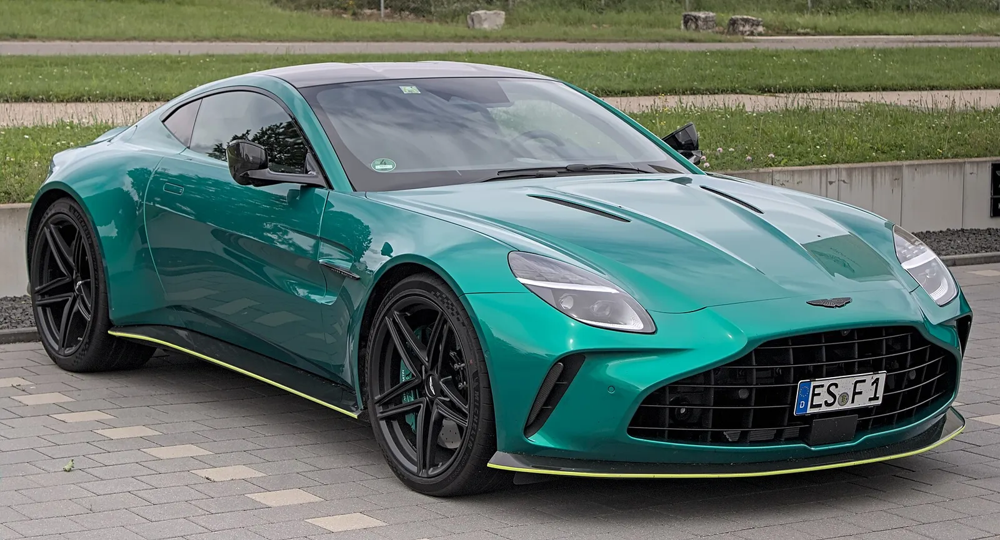
▲ 4.0L V8 트윈터보를 쓰는 현행 밴티지(2024년형, 독일 촬영). V8 라인업의 한 축이다 ⓒ Alexander-93 (Wikimedia Commons, CC BY-SA 4.0)
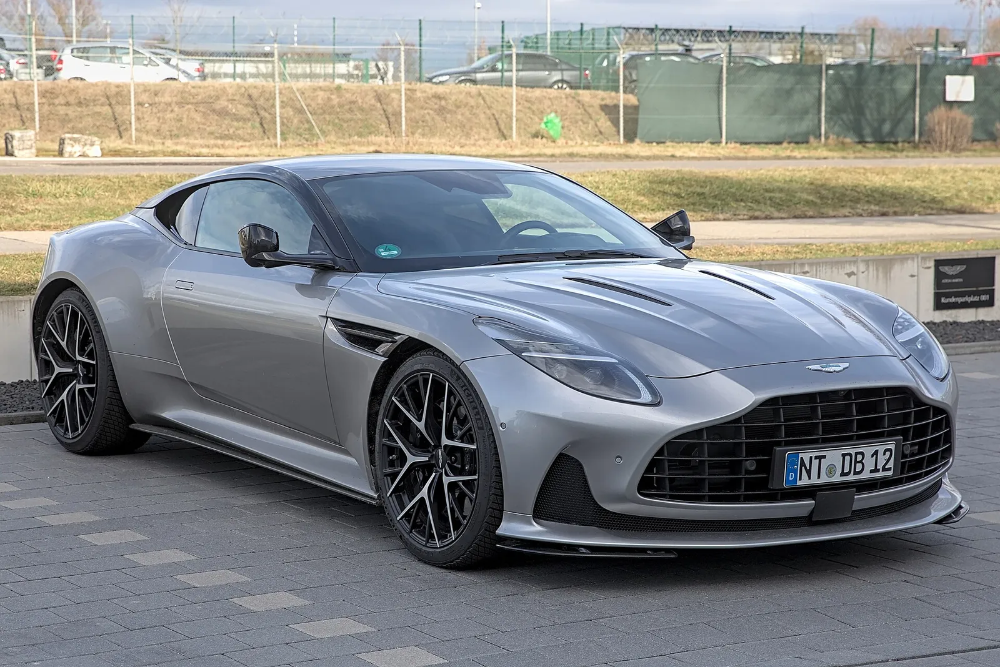
▲ 4.0L V8을 얹은 GT 애스턴마틴 DB12(독일 촬영). 같은 계열 S 사양이 국내 공개됐다 ⓒ Alexander-93 (Wikimedia Commons, CC BY-SA 4.0)
다른 브랜드의 EV 일정 조정과도 흐름이 겹친다. 같은 영국 럭셔리 브랜드 벤틀리도 EV 올인에서 유연 전략으로 돌아섰다는 분석을 벤틀리 EV 전략 기사에서 다뤘고, 페라리·벤틀리의 첫 전기차 비교는 첫 전기차 비교 기사에서 정리했다. 영국 규제 환경은 영국 ZEV 의무 완화 기사를 참고할 수 있다. 홀마크가 말한 '2035 직전'이 구체적으로 어느 규정(영국 신차 판매 규정인지, 유럽 규정인지)을 가리키는지는 인용 보도에서 확인되지 않았다.
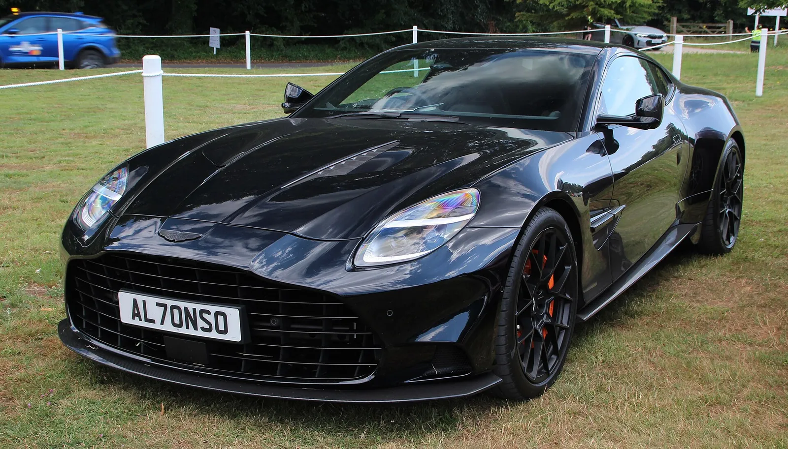
▲ 플래그십 GT 신형 밴퀴시(연식은 확정하지 않음, 전시 촬영). 애스턴마틴의 플래그십 GT다 ⓒ Calreyn88 (Wikimedia Commons, CC BY-SA 4.0)
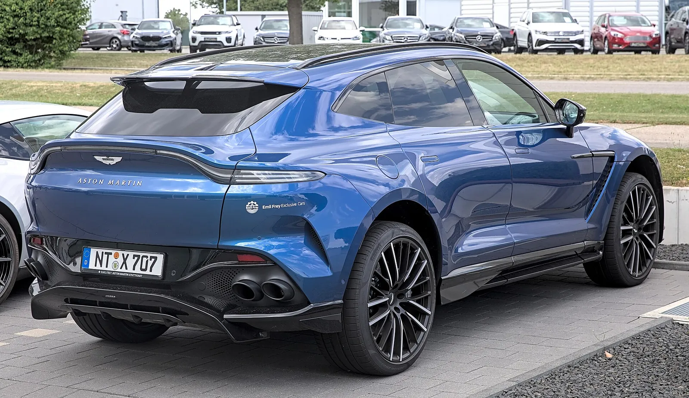
▲ 고성능 SUV DBX707의 후면(독일 촬영). SUV 라인업도 V8 중심이다 ⓒ Alexander Migl (Wikimedia Commons, CC BY-SA 4.0)
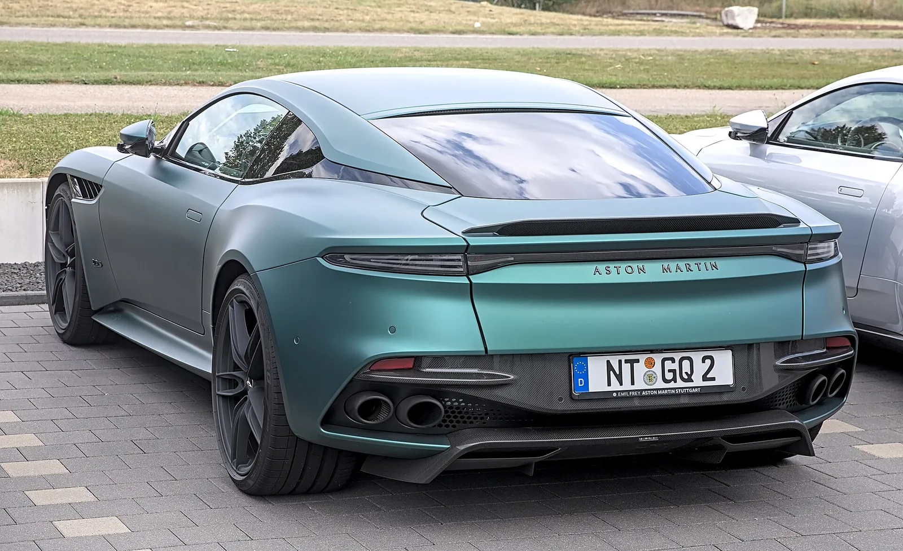
▲ V12 플래그십 GT로 알려진 DBS 슈퍼레제라의 후면(독일 촬영, 파일 정보 기준). V12 유지 로드맵이 이어질 차급이다 ⓒ Alexander Migl (Wikimedia Commons, CC BY-SA 4.0)
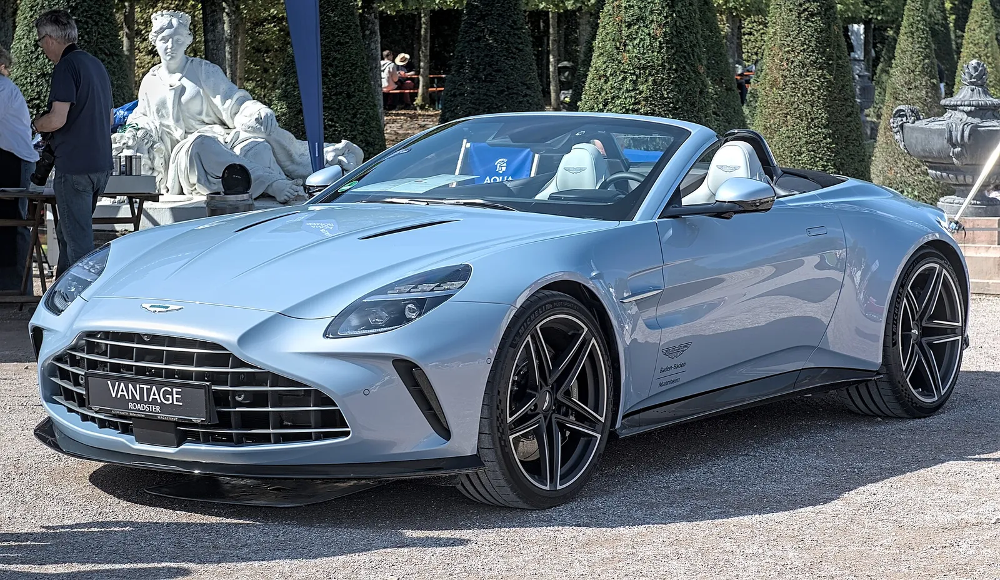
▲ 밴티지 로드스터(전시 촬영, 파일 정보 기준 2025년). V8 내연 라인업이 당분간 주력으로 남는다는 이번 로드맵과 맞닿은 차종이다 ⓒ Alexander-93 (Wikimedia Commons, CC BY-SA 4.0)
7. 경쟁 브랜드는 어디까지 왔나 — 첫 EV 시점 비교
애스턴마틴의 '2033~2035'가 얼마나 늦은 것인지는 비교해 봐야 보인다. 카프리즘이 이미 다룬 기사와 이번에 열람한 보도에서 확인된 값만 정리했다. 확인하지 못한 칸은 비워 두지 않고 "확인 못 함"으로 적었다.
| 브랜드 | 첫 순수전기차 상태 | 확인된 세부 | 근거 |
|---|---|---|---|
| 애스턴마틴 | 2033~2035년 사이(구체 연도 미확정) | 차종·가격·플랫폼 미공개, 하이브리드는 "아마 플러그인은 아니다" | 홀마크 오토카 인터뷰 |
| 페라리 | 루체, 2026년 5월 25일 세계 최초 공개 | 1,050cv, 주행거리 약 530km, 국내 가격 약 9억 7000만 원 | 루체 국내 공개 기사·비교 기사 |
| 벤틀리 | 토르칼, 2026년 9월 24일 세계 최초 공개 | 가격 17만 3000파운드, 다음 순수전기차는 2030년 이후 전망 | 비교 기사·벤틀리 전략 기사 |
| 람보르기니 | 순수전기 란자도르 계획을 접고 PHEV로 선회 | 윈켈만 CEO가 순수전기차에 대한 고객 수용도가 "0에 가깝다"는 취지로 말한 것으로 보도(선데이타임스 인터뷰 인용), 출시 연도 확인 못 함 | Autobuzz 2026.2.24 보도 |
| 맥라렌 | 하이브리드 중심, 순수전기차 일정 확인 못 함 | 아투라 등 하이브리드 위주, 전기 하이퍼카에는 신중 | 맥라렌 리브랜딩 기사 |
카프리즘이 계산한 격차는 단순하다. 페라리는 2026년에 첫 EV를 공개했고, 애스턴마틴의 창구(2033~2035)는 공개 연도 기준으로 7~9년 뒤다(2033-2026=7, 2035-2026=9). 벤틀리의 '다음' EV가 2030년 이후라는 점과 비교하면 애스턴마틴의 첫 EV는 그보다도 3~5년 늦다(2033-2030=3, 2035-2030=5, 단 벤틀리 수치는 '2030년 이후'라는 하한만 확인). 이 비교는 공개 시점과 출시 창구라는 서로 다른 기준을 섞은 것이라 정밀한 순위가 아니라 대략적인 거리감으로만 읽어야 한다. 같은 소규모 고급차 업체여도 브랜드마다 EV를 '정체성'으로 보느냐 '규제 준수 수단'으로 보느냐가 갈린다.
8. 한국 독자에게 의미하는 것 — 확인되지 않은 것들
국내에서 애스턴마틴을 고르는 소비자 입장에서 이번 발표는 "당분간 V8·V12 신차가 계속 나온다"는 신호다. 다만 국내 판매 모델 구성·가격·배출 규제 적용은 이번 보도에서 다뤄지지 않았다. 또한 '2035년까지 유지'는 규제 허용 범위 내라는 단서가 붙어 있으므로, 유럽 등 주요 시장에서 규제가 앞당겨지면 달라질 수 있다.
| 항목 | 상태 |
|---|---|
| 첫 BEV 출시 시기 2033~2035 | 복수 매체의 직접 인용 일치(오토카 인터뷰 기반) |
| V8·V12 2035년까지 유지 | 인용 일치(규제 준수 전제). 단종 일정 발표 아님 |
| 애스턴마틴 공식 보도자료 | 확인하지 못함(이번 변경은 인터뷰 보도) |
| 오토카 원문·인터뷰 날짜 | 직접 열람하지 못함. 10월 2일 전후 보도로만 확인 |
| 첫 BEV 차종·가격·플랫폼 | 미공개 |
| 루시드·메르세데스·지리 계약 조건·로드맵 | RNS는 세 회사와의 협약이 기술 접근을 제공한다고만 적음. 조건 변경·지리의 구체 역할은 확인 못 함 |
| 오토카 인디아·폴탄 직접 인용 | 본문 열람으로 원문 영어 인용구 확인 |
| 배당 | RNS에서 배당 선언 확인되지 않음 |
| 람보르기니 란자도르 PHEV 출시 연도 | 확인 못 함 |
| 맥라렌 첫 EV 일정 | 확인 못 함 |
| 2024년 4월 "2027" 의미 | 매체별 해석 상이 |
9. 요약
2033~2035는 애스턴마틴 첫 BEV가 나올 시기이고, V8·V12는 그 기간 끝(2035)까지 규제에 맞춰 이어 가는 로드맵이다. 홀마크 CEO는 "2035일 수도, 2033일 수도 있다. 2031은 아니다"라고 말했다.
첫 EV 목표는 2025년에서 2026, 2029~2030을 거쳐 2033~2035로 밀렸다. 2025년 대비 8~10년 지연이다. 사유는 수요·법규의 변화 속도와 기술 성숙이며, 수익성은 CEO가 직접 언급한 근거를 확인하지 못했다.
플러그인 하이브리드는 "필요 없다"는 쪽으로 기울었다. 2026년 상반기 공식 실적에서는 순부채 15억 4470만 파운드(H1 2025 대비 +12.1%, 2025년 12월 말 대비 +11.9%)와 투자 축소가 확인되지만, 이를 EV 연기와 직접 연결한 것은 카프리즘의 추정이다. 오토카 UK 원문과 애스턴마틴 공식 발표는 확인하지 못했다(오토카 인디아·폴탄 본문으로 직접 인용은 확인).